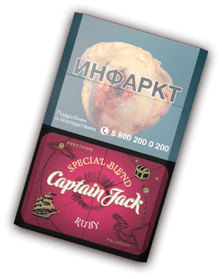
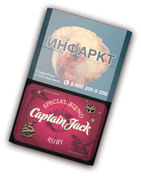

Капитан Джек — смелый и свободолюбивый пират + еще текст в три строки
06.02.2024
Капитан Джек
это собирательный образ смелого и
свободолюбивого пирата, любящего приключения,
эксперименты и не привыкшего скучать.
Он из тех, кто
предпочтёт вступить в схватку со стихией, а не отсиживаться
дома в вязаных носках у камина.
Наш морской волк знает толк в качественной выпивке и
табаке.
Капитан по достоинству оценил бы новые
сигареты Сaptain Jack, ведь при их производстве мы
используем премиальный табак Вирджиния и
исключительно натуральные ароматизаторы.
Captain Jack
является символом свободы, смелости и
непоколебимой решимости отправиться в новое плавание в
поисках сокровищ и приключений.
.png)
Новые вкусы!
06.02.2024
Новые вкусы!
06.02.2024
У новинки
Captain Jack есть все, чтобы
заинтересовать покупателя и занять ведущее
положение на рынке.
Смягчённая мешка
табаков Вирджиния, уравновешенная
ароматика и высокое качество сырья помогут
привлечь покупателей и переключить их с
продукции конкурентов.
Благодаря использованию табаков Вирджиния
и ароматной шоколадной нотке Captain Jack
Original сможет обратить на себя внимание на
рынке, а потребители по достоинству оценят
высокое качество этих сигарет.
Captain Jack Ruby это сбалансированная
классика с лёгким ароматом вишни. Выдержанный качественный табак
Вирджиния ненавязчиво оттеняется
благородными сладкими нотками с
миндальным привкусом косточки.
.png)
Капитан Джек — смелый и свободолюбивый пират + еще текст в три строки
06.02.2024
Капитан Джек
это собирательный образ смелого и
свободолюбивого пирата, любящего приключения,
эксперименты и не привыкшего скучать.
Он из тех, кто
предпочтёт вступить в схватку со стихией, а не отсиживаться
дома в вязаных носках у камина.
Наш морской волк знает толк в качественной выпивке и
табаке.
Капитан по достоинству оценил бы новые
сигареты Сaptain Jack, ведь при их производстве мы
используем премиальный табак Вирджиния и
исключительно натуральные ароматизаторы.
Captain Jack
является символом свободы, смелости и
непоколебимой решимости отправиться в новое плавание в
поисках сокровищ и приключений.

 
